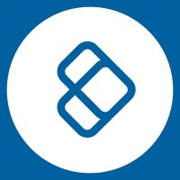
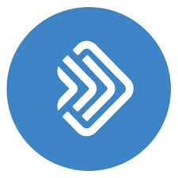

Іван Карбашевський
Фронтенд розробник
З понад десятьма роками досвіду в ІТ, включаючи понад шість років у європейському технологічному секторі та чотири роки як програміст за межами Європи.
Спеціалізується на frontend development та управлінні командами та проектами.
Володіє передовими навичками створення веб-додатків за допомогою Angular framework та впровадження Progressive Web Apps (PWA).
Керував командами фронтенд, впроваджуючи інноваційні методи роботи, що призвели до значного підвищення ефективності.
Створив перший портал в Україні, який публікував витрати міського бюджету.
Має два ступені з комп'ютерних наук від AEH у Варшаві: Магістр інженерії комп'ютерних наук (2022-2024) та Інженер комп'ютерних наук (2017-2021).
Вміння
- Лідерство та управління:
- Маю досвід роботи технічним керівником та управління проектами. Ефективний в оптимізації бізнес-процесів та процесів розробників. Маю навички планування спринтів у Scrum. Активно підтримую членів команди у вивченні нових технологій та вирішенні технічних проблем, сприяю їхньому професійному розвитку.
- Технології та інструменти:
- Я добре володію такими інструментами, як Docker, Docker Compose, Telerik Kendo, MSAL та інструментами Microsoft (Jira, Confluence, Teams). Я використовую Firebase та CI/CD, а також розробляю PWA-додатки.
- Мови програмування та фреймворки:
- Програмую на JavaScript, TypeScript та PHP (Yii2). Маю досвід роботи з фреймворками Angular, AngularJS, AngularDart, jQuery, Flutter та IONIC, а також управлінням станом додатків за допомогою NGXS та NGRX.
- Дизайн та розробка:
- Я розробляю мобільні додатки з використанням IONIC та Flutter, а також веб-портали з використанням jQuery, Angular, Yii2, AngularJS та AngularDart. Займаюся RWD (адаптивним веб-дизайном) і TDD (тест-орієнтованою розробкою), а також модульним тестуванням (Jest). Створюю та просуваю проекти з відкритим вихідним кодом та розробку програмного забезпечення.
- Дизайн та користувацький досвід:
- Я володію навичками графічного дизайну за допомогою Figma та Tailwind, а також дбаю про доступність відповідно до WCAG.
- Soft Skills:
- Міцна комунікація
- Вирішення проблем
- Увага до деталей
- Управління часом
- Інший:
- Займаюся валідацією даних та SEO-оптимізацією. Маю досвід інтеграції платіжних та авторизаційних систем. Також самостійно вирішувати проблеми, аналізувати пропозиції клієнтів, графічно представляти те, що просить клієнт, співпрацювати з колегами, пояснювати колегам, що і як працює і чому. Вміння сприймати сторонню думку та зосереджуватися на головному.
Досвід роботи

UNICARD Systems Sp. z о.о. - Краків
Жовтень 2021 - теперішній час
Frontend Develop
- Досвід і розвиток: Я був найнятий на посаду FRONTEND DEVELOPER.
- Просування по службі: Швидко просунувся на посаду технічного лідера фронтенду, що передбачало проведення тренінгів для колег та впровадження сучасних методів аналізу, планування та реалізації завдань.
- SCRUM: Команда навчила мене працювати за методологією SCRUM, що дозволило ефективно управляти проектами.
- Обов'язки:
- Рефакторинг проектів та створення юніт-тестів за допомогою Jest.
- Впровадження нового функціоналу за методологією Scrum.
- Налаштування середовища та проекту, що дозволяє працювати в різних сценаріях за допомогою Docker та Docker Compose.
- Представляємо нові інструменти: Telerik Kendo та Microsoft Authentication Library (MSAL).
- Оновлення версій Angular: Прискорення збірки проекту вдвічі, скорочення часу компіляції реалізації завдань втричі та прискорення виробничої версії на ~60%.
- PWA: Впровадження прогресивних веб-додатків (PWA) покращило зручність для клієнтів, що призвело до збільшення позитивних відгуків та продажів.
- Тренінг з Figma: Навчили фронтенд-команду та деяких співробітників використовувати Figma, що дозволило розробникам зосередитися на роботі, а не на дрібних консультаціях з колегами.
- Колаборація: Працював у команді з тестувальниками, бекенд-командою та бізнес-аналітиком, використовуючи такі інструменти, як Jira, Confluence, Teams та інші продукти Microsoft.
- Поточні обов'язки:
- Розширення фронтенд-команди, прискорення досягнення цілей.
- Подальший рефакторинг старих частин проекту та підхід «mobile first» з адаптивним дизайном для різних налаштувань.
- Перехід на Tailwind і NGXS з NGRX.
- Впровадження підтримки часових поясів та мови користувача.
- Досягнення вимог WCAG для кращої доступності додатків.
- Планування: Нові методи планування зменшили кількість нереалізованих завдань вдвічі та скоротили час планування спринтів фронтенд-команди на ~40%.

SKK S.A. - Краків
Березень 2023 - жовтень 2023
.NET Developer
- Посада: Фронтенд-розробник, залучений до DevOps та керівник фронтенд-команди.
- Створення нового проекту: Створили з командою новий проект з нуля, базуючись лише на частково готовій версії на .NET.
- Міграція: Перенесли існуючий проект з .NET на Angular.
- Обов'язки:
- Планування етапів реалізації та оцінка часу виконання завдань.
- Додавання нових функцій та використання NGXS для державного управління.
- Колаборація: Працювала в Scrum, тісно співпрацюючи з тестувальником та менеджером проекту.
- Інструменти: Використовував Telerik Kendo для створення інтерфейсу.
- Підходи: Застосовано DDD (частково) та частково TDD.
- Конфігурація: Побудували правильну конфігурацію хмарного сервера в Azure та конфігурацію проекту для різних сценаріїв, наприклад, без хештегу в маршрутизації.
- Оптимізація: Принцип «Mobile First», оптимізований інтерфейс для мобільних пристроїв (RWD та PWA).
- Успіх: Досягнуто своєчасного завершення проекту, що дозволило команді повернутися до основної компанії для продовження роботи.

EFENDI - Варшава
Травень 2018 - жовтень 2021
Front-end developer
- Визначені кроки для зниження рівня повернення на 10%, що в кінцевому підсумку призведе до економії $75 тис. витрат.
- Створював мобільні додатки та веб-портали, включаючи їхні інтерфейси, використовуючи різні мови та фреймворки:
- Мови та технології: JavaScript, TypeScript, Dart, HTML/CSS, PHP.
- Фреймворки та бібліотеки: IONIC, JQUERY, Angular Material, Angular2+, AngularJS, AngularDart, Flutter.
- Інструменти для проектування інтерфейсів: Figma.
- Державне управління: NgRX, MobX.
- Використовував Docker для ефективного управління середовищами розробки.
- Керування завданнями за допомогою YouTrack.
- Налаштували та підтримували CI/CD з TeamCity.
- Інтегрована Firebase для пуш-сповіщень.
Проєкти
Bee O`clock
2022 - теперішній час
Засновник
- Зосередьтеся на роботі, а ми візьмемо на себе решту

Thiis
2021 - теперішній час
Засновник
- Створив проект з відкритим вихідним кодом Thiis, метою якого є створення пакету для ванільного JavaScript, що дозволяє легко і зрозуміло перевіряти дані.
- Мотивація: Необхідність точної та однозначної валідації даних, щоб уникнути неправильної інтерпретації як системою, так і розробниками, створення зрозумілого та простого коду валідації.
- Функціональність:
- Додано типізацію для кращої підтримки TypeScript.
- Впровадження простого синтаксису перевірки, наприклад, is.object(variable) замість складних умов.
- Комбінування різних перевірок, наприклад, is.object_not_empty(variable).
- Підтримка глобальних методів, наприклад, is.HTMLElement(variable).
- Всі методи повертають булеві значення, що виключає помилки валідації.
- Ядро бібліотеки використовує JavaScript-проксі для динамічних викликів методів на основі імен, наданих розробниками.
- Приклад: Замість складного коду if(typeof variable === 'object' && variable !== null && !Array.isArray(variable) && Object.keys(variable)?.length) використовуйте простіший і більш читабельний: if (is.object_not_empty(variable))
- Плани на майбутнє: Розробити інструмент командного рядка для перетворення команд у вбудований код для швидшого виконання програм.
- Просування проекту: Активне просування на таких платформах, як medium.com та dev.to для збільшення популярності проекту.

Salo-Sale
2018 - 2020
Засновник
- Комерційний Заснував і керував проектом Salo-Sale, що складається з комплексної системи, яка включає адміністративну панель, мобільні додатки та загальнодоступний веб-сайт.
- Технології:
- Адмін-панель для власника проекту: Angular 6 (оновлено до Angular 7).
- Панель компанії: Angular 6 (оновлений до Angular 7), що дозволяє керувати сторінкою компанії та обробляти замовлення.
- Мобільний додаток для користувача: Flutter (для Android та iOS) з інтеграцією автентифікації Google, Facebook та Apple. Додаток підтримував щонайменше дві мови: Українська та англійська.
- Мобільний додаток компанії: Функції для сканування та викупу віртуальних монет з акаунтів користувачів, просування пропозицій та знижок.
- Загальнодоступний веб-сайт: Yii2 (PHP), оптимізований для SEO. o Сервер: Yii2 (PHP).
- База даних: MariaDB.
- Основні досягнення:
- Створено та впроваджено систему знижок для місцевого бізнесу, залучаючи як місцевих жителів, так і немісцевих.
- Розробили мобільний додаток, що дозволяє користувачам збирати віртуальні монети за перегляд реклами та обмінювати їх на знижки або товари, пропоновані місцевим бізнесом.
- Забезпечення задоволеності клієнтів шляхом постійного вдосконалення функціоналу додатку та порталу, незважаючи на виклики, пов'язані з пандемією COVID-19.
- Навіть після закриття проекту користувачі продовжували використовувати зібрані знижки, особливо в онлайн-бізнесі.
- Дозволила компаніям пропонувати продукти (наприклад, піцу) за віртуальні монети, заощаджуючи на витратах на просування та отримуючи додатковий прибуток від продажу напоїв та додаткових послуг разом з цими продуктами.
- Отримав досвід управління проектами та командами, вирішення технічних проблем та оптимізації бізнес-процесів.
- Цікавий факт: навіть після закриття проекту користувачі активно використовували систему, накопичуючи бали та користуючись знижками в онлайн-бізнесі.
Освіта

2022 - 2024
Магістр інженерії в галузі комп'ютерних наук
AEH - Варшава, Польща
2017 - 2021
Інженер з комп'ютерних наук
AEH - Варшава, Польща
Статті
2024
Реактивна директива для ефективного управління підписками в Angular
В Angular дуже важливо ретельно керувати підписками на спостережувані, щоб запобігти витоку пам'яті та непередбачуваній поведінці.
2024
Додавання декоратора TakeUntilDestroy: Зручний інструмент для Angular-розробників
В Angular керування підписками на спостережувані може бути громіздким, особливо забезпечення належного скасування підписки при знищенні компонента.
2023
Human, AI, AGI.
Як ми всі знаємо, штучний інтелект досяг значного прогресу за останні роки, і його застосування зараз переважає в різних галузях, від охорони здоров'я до фінансів.